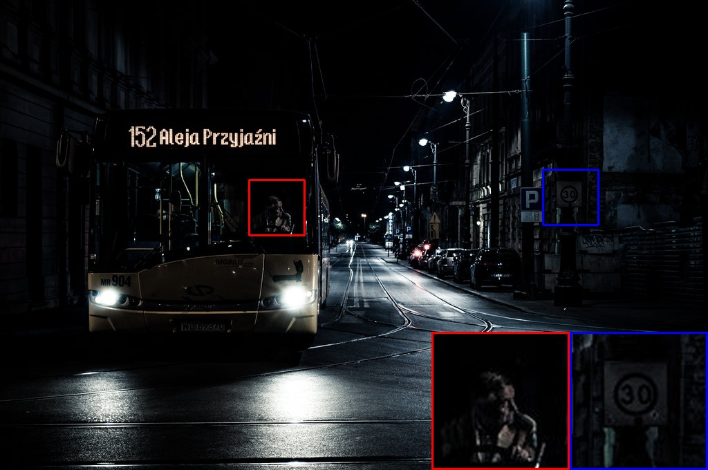
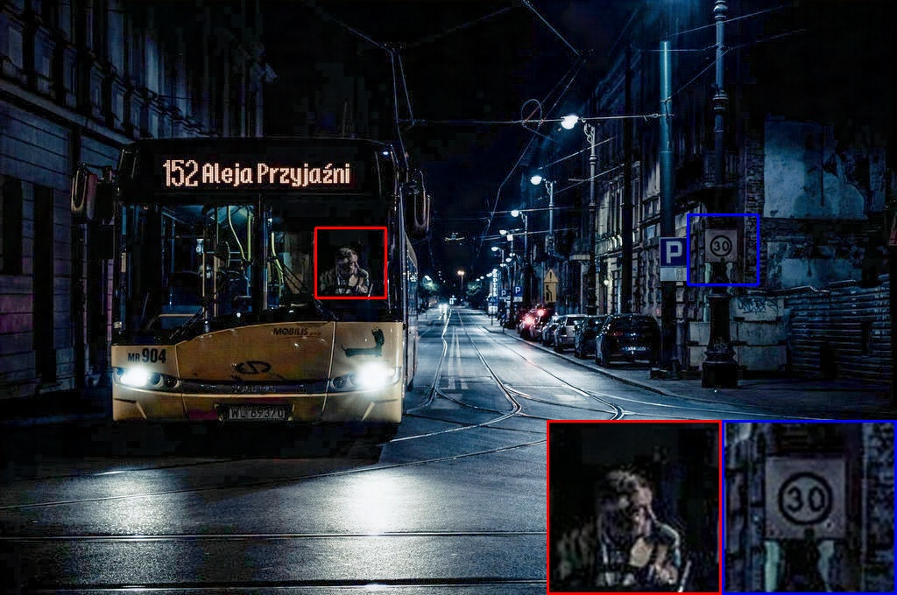
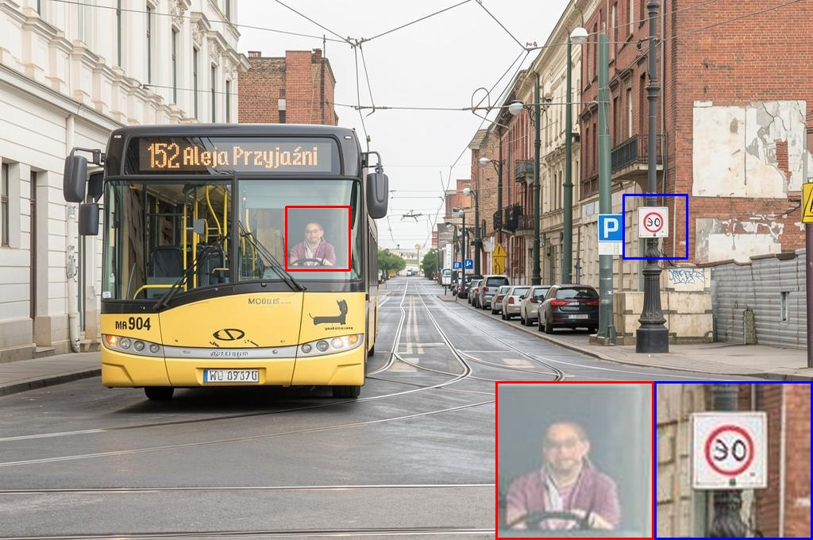
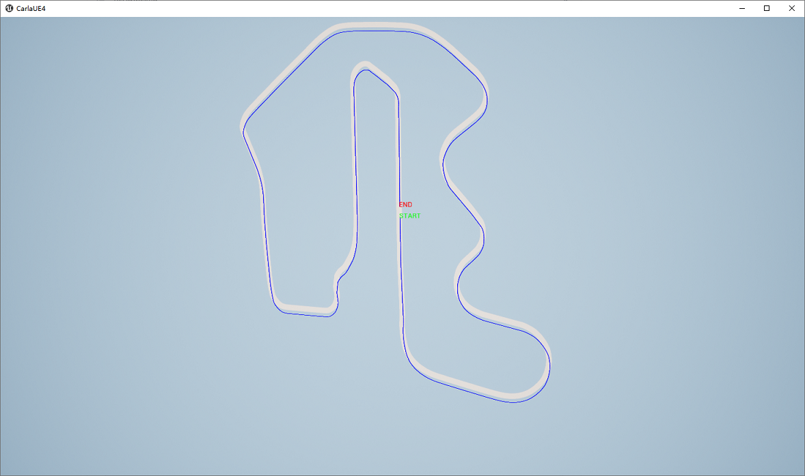
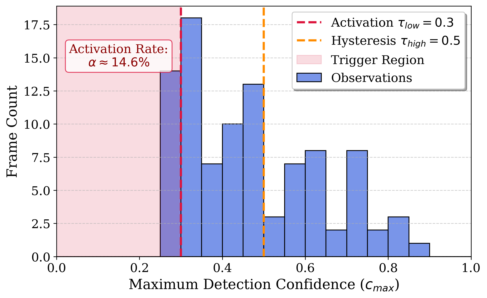

Low-light conditions severely degrade robotic perception: object detectors trained on daylight imagery fail under fog and darkness, yet existing Low-Light Image Enhancement (LLIE) methods are designed for offline processing and cannot integrate into live control loops. We identify a critical deployment gap—no prior work runs a large generative model as a real-time sensor inside a control loop.
We introduce a Generative Neural Sensor that treats illumination as a generative prior rather than a signal processing problem, enabling task-relevant semantic recovery. An Asynchronous Perceptual Architecture decouples high-latency semantic recovery from low-latency vehicle control, isolating a rectified-flow transformer and illumination adapter in a background thread. Uncertainty-aware activation triggers enhancement only when detection confidence drops, treating generative compute as a sparse resource.
TL;DR. Pixel-reconstruction LLIE can erase the edges detectors need. Generative semantic recovery + async, confidence-triggered deployment closes the low-light domain gap for live robotic control.
Semantic priors beat pixel reconstruction. On ExDark, our method leads all 12 categories (87.1% mAP). On vKITTI2 fog, MambaSFLNet falls below the unenhanced baseline (F1 0.579), while generative recovery reaches F1 0.855.
Async neural sensing. A large diffusion model need not block the 20 Hz control loop: isolate it in a background thread and feed the latest relit manifold to detection.
Uncertainty-aware activation. At sunset, event-driven triggering relights only 0.4% of frames, cutting GPU utilization from 95% to 0.4% while also reducing collisions— gating avoids unnecessary generative artifacts.
Closed-loop safety. On Thunderhill in CARLA, generative sensing restores near-daylight collision rates under sunset and night; CLAHE does not.
Pipeline overview and asynchronous active-perception animation from the paper supplemental materials.
Full pipeline overview — generative neural sensor in the loop.
Asynchronous active perception — high-latency recovery decoupled from control.
ExDark real-world low-light detection: original input, MambaSFLNet (IROS 2025 SOTA), and our generative neural sensor.



Identical obstacle seeds across Day / Sunset / Night. YOLO is daylight-trained; the generative sensor maps degraded frames back into the detector’s operating domain.

Virtual Thunderhill Raceway — closed-loop evaluation environment.
Selected tables from the paper. Best in red, second-best in blue.
| Method | Bicycle | Car | Dog | People | Mean |
|---|---|---|---|---|---|
| RetinexNet | 0.790 | 0.820 | 0.721 | 0.784 | 0.736 |
| MambaSFLNet | 0.821 | 0.824 | 0.779 | 0.809 | 0.766 |
| Ours | 0.886 | 0.878 | 0.933 | 0.851 | 0.871 |
Full 12-category table in the paper — Ours leads every category.
| Method | F1 | mAP@50 |
|---|---|---|
| Baseline | 0.681 | 0.544 |
| CLAHE | 0.781 | 0.635 |
| MambaSFLNet | 0.579 | 0.452 |
| Ours | 0.855 | 0.807 |
Pixel-reconstruction SOTA degrades below the unenhanced baseline under fog.
| Method | Collisions | Rate (%) | Latency |
|---|---|---|---|
| Daytime (Oracle) | 20.4 ± 2.4 | 22.47 ± 3.07 | 1.7 ms |
| Dark (No Fix) | 29.6 ± 3.6 | 32.61 ± 4.50 | 1.7 ms |
| Dark + CLAHE | 31.4 ± 4.1 | 34.39 ± 3.64 | 2.0 ms |
| Dark + Gen. (Ours) | 22.0 ± 7.2 | 24.55 ± 6.30 | 62.0 ms |
Generative sensing restores near-daylight collision margins under night.
| Mode | Collisions | Frames Relit | Latency | GPU Util |
|---|---|---|---|---|
| Continuous Relight | 30.4 ± 2.2 | 100% | 62.0 ms | 95.0% |
| Event-Driven (τ=0.3) | 23.4 ± 2.1 | 0.4% | 2.0 ms | 0.4% |
Sparse activation is both cheaper and safer when lighting is only partially degraded.

Confidence histogram over a low-light lap; dashed lines mark τlow=0.3 and τhigh=0.5.
Closed-loop CARLA Thunderhill stack, relighting service, MPC_DLC controller, and paired A/B evaluation scripts:
@inproceedings{xu2026neuralsensor,
title = {Real-Time Diffusion Relighting as a Neural Sensor:
Closing the Low-Light Domain Gap for Robotic Perception},
author = {Xu, Shengjie and Gao, Alexander and Rai, Anshul and
Lee, Dae Yeol and Su, Guan-Ming and Lin, Ming C.},
booktitle = {IEEE/RSJ International Conference on Intelligent Robots
and Systems (IROS)},
year = {2026}
}